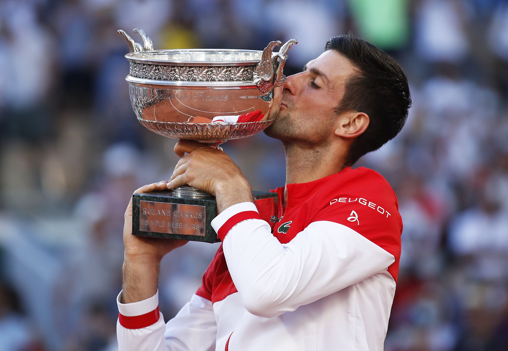
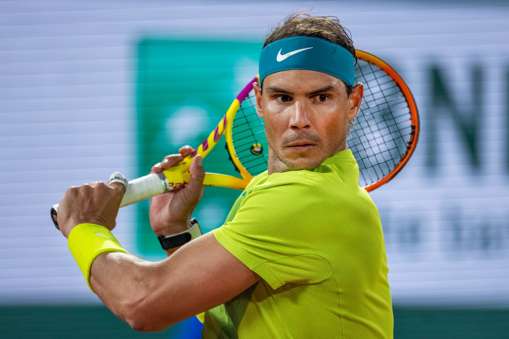
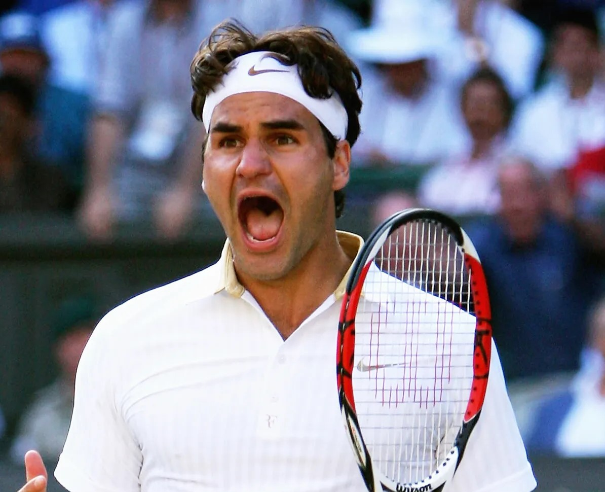
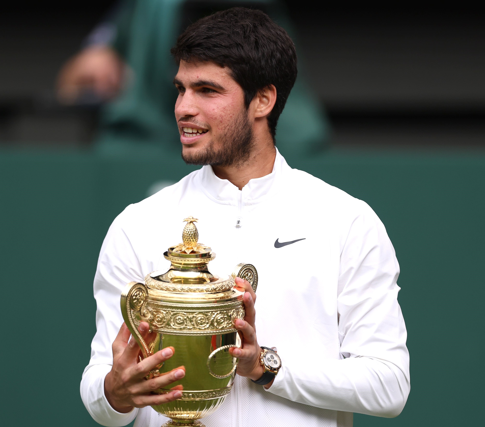
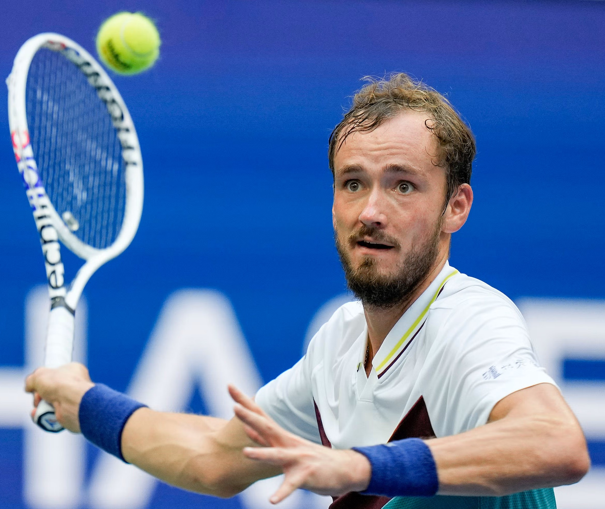

Roland Garros and tennis players
Let's discover some of the greatest tennis players
You want to know more about who wrote this page ?
The author
Introduction
Great tennis players have enormous talent, determination and are excellent on the court. Their ability and their precision enable them to anticipate the blows of their opponents, and also to manage pressure in crucial moments.
These exceptional athletes have left an indelible mark on tennis history, inspiring generations of fans around the globe.
1. Record Winner : Novak Djokovic

Born in 1987. Won Roland Garros 3 times and he has the record of victories of the Grand Slames : 24 times
2. Get more information on the tournement
Roland Garros
3. Photos of the best players

Raphael Nadal
Born in 1986. Won Roland Garros 14 times

Roger Federer
Born in 1981. Won Roland Garros 1 time and 8 times Wimbledon

Carlos Alcaraz
Born in 2003. Won Wimbledon and US open but not yet Roland Garros

Daniil Medvedev
Born in 1996. Won Us open 1 time but not yet Roland Garros